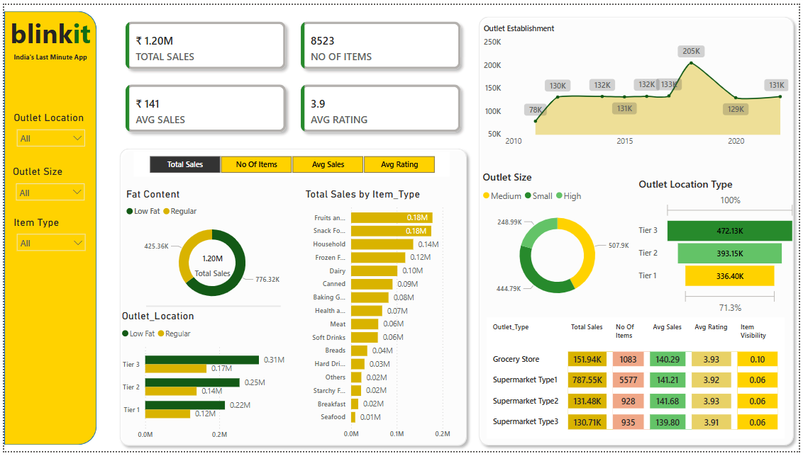

Quick Delivery Orders Data Analysis
← Back to All Projects

Project Overview
This Power BI dashboard provides a comprehensive sales performance overview for Blinkit — a quick-commerce platform. The goal of this dashboard is to uncover patterns in sales, product types, outlet characteristics, and item visibility across different outlet tiers and formats. It is designed to support business, category, and operations teams in understanding where sales are strongest and how product attributes and outlet configurations impact performance.
Key Findings & Insights
- Tier 3 outlets contributed the highest sales (₹472K), outperforming Tier 1 locations.
- Supermarket Type 1 dominated with ₹787K in sales and over 5,500 items sold.
- Low Fat items drove ~35% of total sales, showing potential for health-conscious segments.
- Visibility of items was consistent across outlet types, though Grocery Stores had slightly higher visibility metrics.